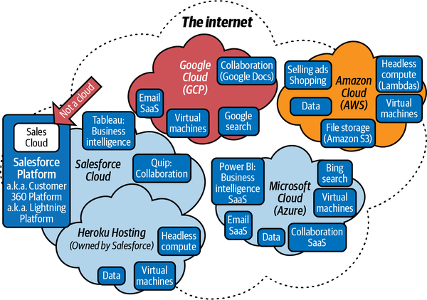
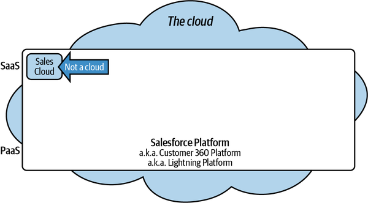
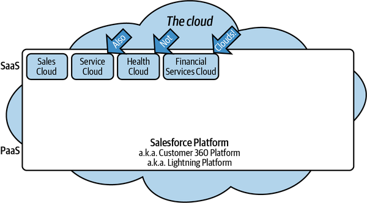
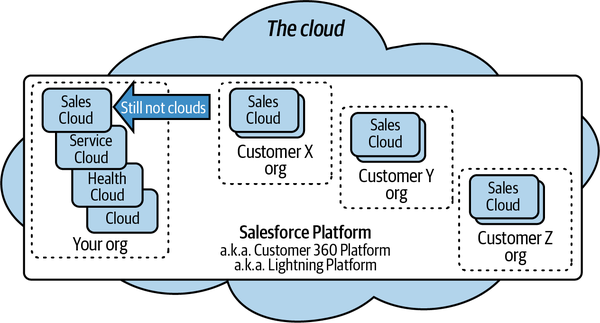

Chapter 1. Main Application Functionality and Capabilities
It’s really hard to understand an ecosystem without establishing some boundaries and definitions. As a systems person, I will frequently refer to things inside and outside of a virtual ecosystem. The terms are fluid. Branding often overlaps with functionality. From a practitioner’s standpoint, you may not clearly see where the edges are, and over time those edges will become even less perceivable. I will try to explain what type of “inside” and “outside” I am referring to as we go. Be ready to dump out your glass and reset as you read.
These first chapters will focus more on defining the boundary concepts than teaching where or how to use them. Once you know that the bowl contains milk and not white paint, you should know what to do with it. By the end of this chapter, you should have a decent frame of reference for further learning. The outline of the whole Salesforce ecosystem should be clear, and you should have some understanding of the depth of its capabilities.
Salesforce and Clouds
When learning about the Salesforce ecosystem, the first rule is to set aside your preconceptions about a lot of terminology. Cloud is one of the most egregiously misused terms in all of modern IT, and it’s a very polymorphic term inside the ecosystem. Learning to put a special fnord around any specific definition is essential to absorbing the many paradigms represented within it.
Salesforce started out as a web-based application like Google’s Gmail. (Analogy #1, and we’re off to the races.) What does that mean? We can clarify by listing its basic functions/capabilities (Table 1-1).
| 1 | Access from the internet/anywhere |
| 2 | Compose messages |
| 3 | Send messages |
| 4 | Receive messages |
| 5 | Store messages |
| 6 | Delete messages |
| 7 | Keep a list of people you send to |
| 8 | Provide security/track logins per user |
| 9 | My email doesn’t interfere with your email |
The Salesforce customer relationship management (CRM) system got quite good at all of those functions—so good that it handled them better than the rest of the industry, with more basic platforms. The Salesforce CRM grew up in the early cloud, whereas every other competitor was very much “stuck” to an unshared hardware model.
Let’s do our first Rosetta Stone comparison with a Gmail to Salesforce matchup (Table 1-2).
| Gmail example | Salesforce CRM | |
|---|---|---|
| 1 | Accessed from the internet/anywhere | Yup |
| 2 | Compose messages | Enter data |
| 3 | Send messages | Share with others |
| 4 | Receive messages | View data from others |
| 5 | Store messages | Store data in a database |
| 6 | Delete messages | Manage data |
| 7 | My email doesn’t interfere with your email | Multitenancy |
| 8 | Provide security/track logins per user | Yes |
| 9 | Keep a list of people you send to | CRM functionality |
If you remove the last part, the CRM functions, and leave the skeleton of the data, display, and automation platform, you have the Lightning Platform (Table 1-3). This is the name for the basic Salesforce platform minus any licensed extras. It’s also known as the Customer 360 Platform. The sales-related functions are available via the Sales Cloud platform.
| Gmail example | Salesforce CRM | Salesforce product | |
|---|---|---|---|
| 1 | Accessed from the internet/anywhere | Yup | Lightning Platform |
| 2 | Compose messages | Enter data | |
| 3 | Send messages | Share with others | |
| 4 | Receive messages | View data from others | |
| 5 | Store messages | Store data in a database | |
| 6 | Delete messages | Manage data | |
| 7 | My email doesn’t interfere with your email | Multitenancy | |
| 8 | Provide security/track logins per user | Yes | |
| 9 | Keep a list of people you send to | CRM functionality | Sales Cloud |
The removal of the Sales Cloud functions (and other function-specific features included in the various other ecosystem components) leaves a very capable framework for building and deploying scalable cloud-based applications.
What’s in a Name?
This brings us to our first set of clarifications. Ever since Salesforce gained popularity with a platform that doesn’t have anything to do with “sales,” it’s started to live in the shadow of its own name. This identity problem has been looming for the last few decades.
Colloquially, “Salesforce” can mean three different things:
-
The company cofounded by Marc Benioff and all its holdings
-
The platform that most of the internally developed products live on
-
The Sales Cloud functionality (the initial seed of all three, which lives on the Salesforce platform and is managed by the company called Salesforce)
Salesforce today includes functionality that is useful across many different industries beyond sales, service, and marketing. Those were some of its earliest industry alignments, but it would be difficult to find an industry today that is not using Salesforce for something.
This brings us to our second important clarification. Cloud in the Salesforce lexicon doesn’t always mean a separate hosting location. Salesforce tools and services like Sales Cloud and Service Cloud are add-on packages that you can license and have installed/enabled on your platform instance (that is, the server or cluster of servers your version of Salesforce is hosted on).
The effort to distinguish all of its sub-brands and clarify what function lives under what moniker has been episodic, so watch for major brands/trademarks like Lightning, Einstein, CRM, and 360, all of which have shifting meanings and connotations.
It makes sense if you consider it from a layered and evolutionary perspective, but you’ll have to let the constant renaming wash over you. I think I prefer it to the acronym soup found in other platforms!
To see how the Salesforce ecosystem offerings compare to other cloud providers, let’s start with the overview in Figure 1-1 and a simple definition of a cloud: “A cloud is the net sum of internet-accessible hosted services provided by a company that can be used by people or businesses outside of that company.” This figure puts some of Salesforce’s offerings in context with other providers that you might have worked with already. Salesforce is best known for its software as a service (SaaS) application for salespeople but also has a platform as a service (PaaS) offering and owns a full cloud service provider called Heroku that has capabilities similar to other big names in the industry.

Figure 1-1. An assortment of cloud providers
Let’s zoom in on the “Salesforce Cloud” section of that diagram and distinguish between the applications and the platform (Figure 1-2). (If you’re not already familiar with cloud infrastructure concepts, skip ahead to Figure 2-3 in the next chapter for a basic list of ingredients.)

Figure 1-2. Clouds, PaaS, and SaaS
Sales Cloud is a package of functionality that is enabled for your instance of Salesforce—that is, the instance your organization, or org, resides on. (In Salesforce, the terms “instance” and “org” are often used interchangeably.)
When you log in to your instance, you can make use of the basic platform features as well as any additional features for which you have purchased licenses (Figure 1-3).

Figure 1-3. Clouds and not clouds
You can use this as a basic starting block. Of course, the overall ecosystem may be much more complex, as the example in Figure 1-4 shows, but I’ll try to demystify things as we go along.

Figure 1-4. Company orgs and features
Here are some definitions and conventions we’ll be using going forward:
- Salesforce cloud
-
This is the sum total of all product offerings owned by the Salesforce corporation offered off-premises as SaaS or PaaS.
- Salesforce instance
-
This is a multitenant hosting container that shares resources with multiple clients. This is a logical container of many systems that provides services. Salesforce applies updates per instance, in groups of instances that could also be called instances (Salesforce has trended toward calling these units of shared resources pods). You can infer some of the bigger system management groupings by looking at the Salesforce Trust site, where the company openly reports on issues and patches.
Note
You may be on several pods for what you think is a single org. Your pod may host features that you don’t use in your org. The concept of a pod only ever matters to a customer for update timings and outages.
- Salesforce org
-
Salesforce has more customers hosted than it has servers. Salesforce servers/services are multitenant. The server infrastructure is behind the curtain and known to few. For the purposes of security, administration, and architecture, a Salesforce instance is something that can have a unique URL. This will be explained in more detail later, but for the most part when we refer to an org we mean the specific logical application service boundaries tied to you as a company/customer. Patches to an instance affect all orgs on that instance. More on this later.
- Product or feature
-
This is a named/branded piece of functionality that may or may not be able to coexist with other products in the same instance.
- Sandbox
-
This is a copy of the “main” production org, with the same features and a limited and scopable amount of the data. In Salesforce, the production org is the parent of all the lower orgs, like dev and test. Sandboxes get their own URLs and technically run on separate hardware hosts than the production org, but they are logically connected to and managed from that org. Sandbox orgs should be considered separate from your production org only with relation to direct performance. Most other aspects are linked up to production.
If anything covered in this chapter isn’t clear, please stop, reread, and pay special attention to the diagrams. Still not crystal? Do some googling and phone a friend to make sure you grok all of these logical boundaries. With the exception of pods, you’ll need to be fluent in all of these concepts to work at the enterprise level with Salesforce. It’s not just one thing, and it really is “bigger on the inside.” In the next chapters, we will start slicing the boundaries and defining new dimensions for different types of boundaries.